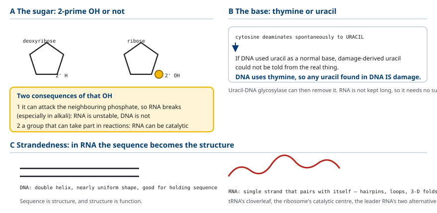
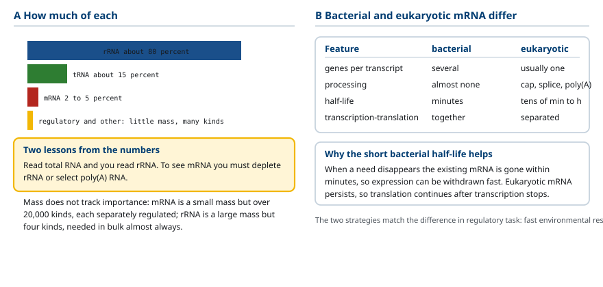
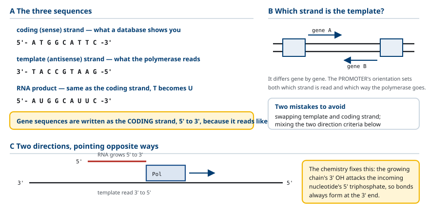
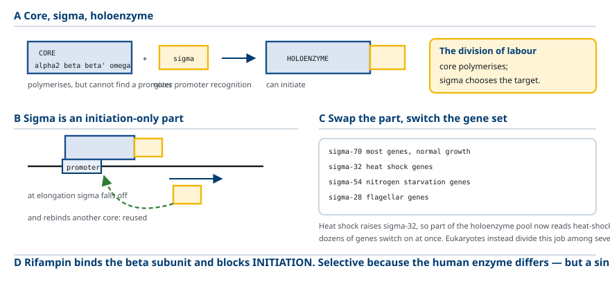
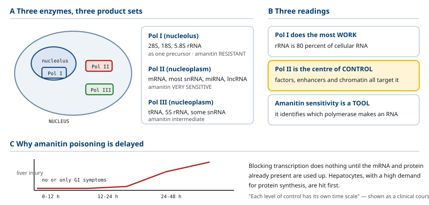
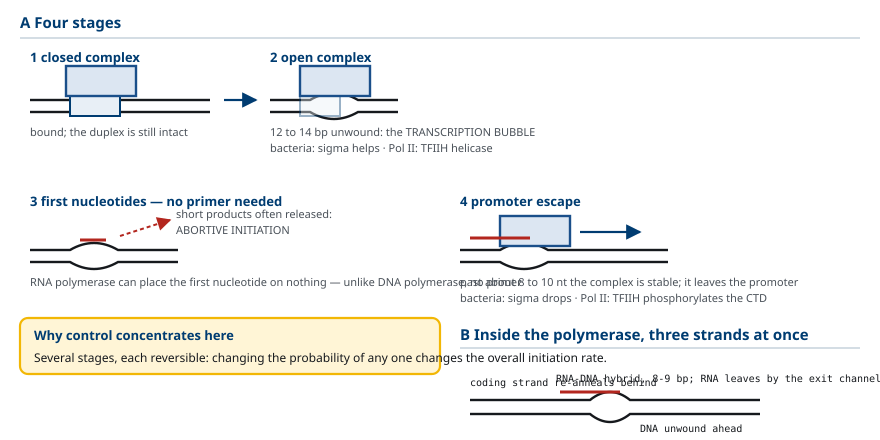
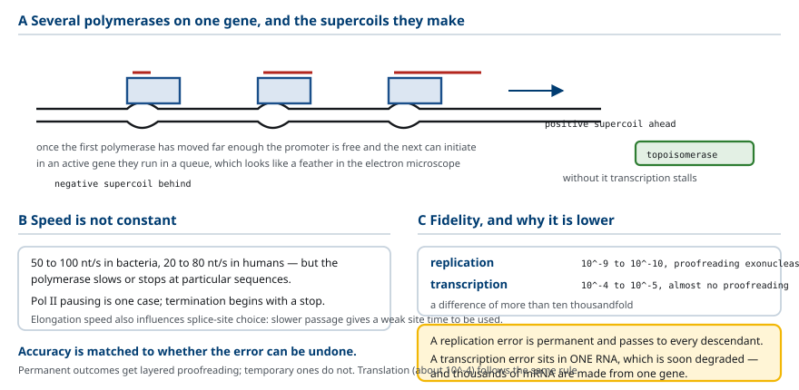
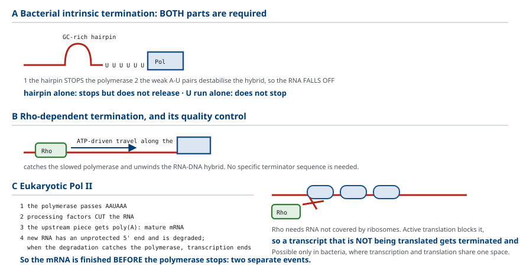
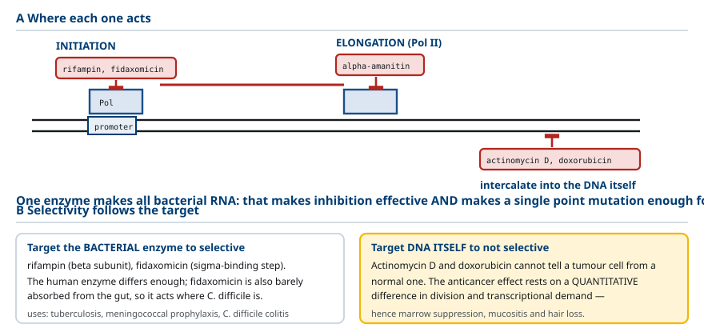
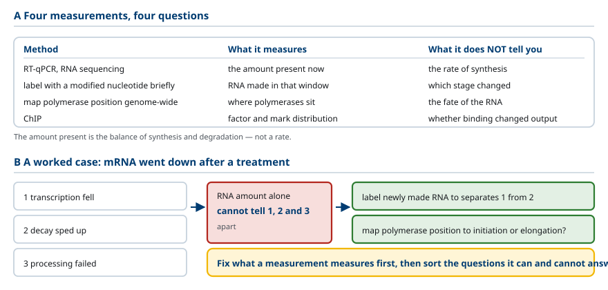

M03-W02-L02 · 분자유전학과 계통별 의학생화학특론
RNA의 종류와 전사의 기전
Classes of RNA and the Mechanism of Transcription
학습목표
- RNA와 DNA의 화학적 차이 세 가지를 쓰고 각 차이가 분자의 성질에 미치는 결과를 설명한다.
- 주요 RNA의 종류를 세포 내 비율과 기능으로 정리하고 각각을 만드는 효소를 연결한다.
- 주형 가닥과 암호 가닥을 정의하고 전사 산물의 서열을 주어진 DNA 서열에서 유도한다.
- 전사의 방향을 두 기준으로 서술하고 왜 RNA가 5′→3′로만 합성되는지 설명한다.
- 세균 RNA polymerase의 구성과 σ 인자의 역할을 쓰고 holoenzyme과 core enzyme을 구분한다.
- 진핵세포의 세 가지 RNA polymerase와 각 산물을 구분하고 α-amanitin에 대한 감수성 차이를 쓴다.
- 전사 개시에서 신장으로 넘어가는 과정을 닫힌 복합체·열린 복합체·promoter 탈출로 나누어 설명한다.
- 전사의 충실도가 복제보다 낮은 이유를 교정 기능과 결과의 가역성으로 설명한다.
- 세균의 두 가지 전사 종결 방식을 구분하고 진핵 Pol II의 종결이 가공과 결합되어 있음을 설명한다.
- 전사를 억제하는 약물과 독소의 작용 지점을 구분하고 선택성의 근거를 쓴다.
선수지식
- M03-W01-L02 DNA의 구조와 복제 — 염기쌍, 이중나선, DNA polymerase의 작용 방향
- M01-W06-L02 유전자와 유전체의 구성 — 유전자의 구조, promoter의 위치
- 뉴클레오타이드의 구조 — 당, 염기, 인산
강의 구성
- 1. RNA와 DNA의 화학적 차이
- 2. RNA의 종류와 세포 내 분포
- 3. 전사의 기본 용어: 주형 가닥과 암호 가닥
- 4. 세균의 RNA polymerase와 σ 인자
- 5. 진핵세포의 세 가지 RNA polymerase
- 6. 전사 개시: 닫힌 복합체에서 promoter 탈출까지
- 7. 신장과 전사의 충실도
- 8. 종결: 세균의 두 방식과 진핵 Pol II
- 9. 전사를 억제하는 약물과 독소
- 10. 전사를 어떻게 측정하는가
1. RNA와 DNA의 화학적 차이
RNA와 DNA는 둘 다 뉴클레오타이드의 중합체이지만 세 가지가 다르고, 그 차이가 두 분자의 역할 분담을 결정한다.
차이 1: 당. DNA는 deoxyribose, RNA는 ribose를 가진다. 둘의 차이는 2′ 탄소에 hydroxyl기가 있는지 여부다. RNA에는 있고 DNA에는 없다.
차이 2: 염기. 둘 다 adenine, guanine, cytosine을 쓰지만, DNA는 thymine을, RNA는 uracil을 쓴다. Thymine은 uracil에 methyl기가 하나 붙은 형태다.
차이 3: 가닥 수. DNA는 보통 이중나선이고, RNA는 보통 단일가닥이다. 다만 RNA가 단일가닥이라는 것은 구조가 없다는 뜻이 아니다. 자기 자신과 염기쌍을 이루어 머리핀, 고리, 복잡한 3차 구조를 만든다.
이 차이들의 결과를 하나씩 보아야 한다.
2′ hydroxyl기의 결과: RNA는 불안정하다. 2′ hydroxyl기는 자신의 바로 옆 인산 결합을 공격할 수 있는 위치에 있다. 특히 알칼리성 조건에서 이 공격이 일어나 사슬이 끊어진다. DNA에는 이 기가 없으므로 같은 조건에서 안정하다. 유전정보의 장기 보관을 DNA가 맡고 RNA가 일시적인 전달과 작업을 맡는 분업의 화학적 근거가 여기에 있다.
2′ hydroxyl기는 동시에 RNA에 촉매 활성을 줄 수 있는 근거이기도 하다. 반응에 참여할 수 있는 기가 있기 때문이다. Ribozyme과 ribosome의 촉매 활성이 이 성질에 의존한다.
Thymine 대신 uracil을 쓰는 결과: 수선의 기준이 생긴다. Cytosine은 자발적으로 탈아미노화되어 uracil이 된다. 만약 DNA가 uracil을 정상 염기로 썼다면, 탈아미노화로 생긴 uracil과 원래 있던 uracil을 구별할 수 없어 수선할 수 없다. DNA가 thymine을 쓰기 때문에 DNA에서 발견된 uracil은 무조건 손상이며, uracil-DNA glycosylase가 제거할 수 있다. RNA는 오래 보관하지 않으므로 이 보호가 필요하지 않고, methyl기를 붙이는 비용도 들지 않는다.
단일가닥이라는 결과: 구조가 기능이 된다. 이중나선인 DNA는 서열을 담는 데 적합하지만 형태가 거의 일정하다. 단일가닥 RNA는 서열에 따라 서로 다른 3차 구조를 접으므로, 서열이 곧 구조이고 구조가 곧 기능이 될 수 있다. tRNA의 클로버잎 구조, ribosome의 촉매 중심, 앞 수업에서 본 리더 RNA의 두 가지 2차 구조가 모두 이 성질에서 나온다.

2. RNA의 종류와 세포 내 분포
세포 안의 RNA를 기능과 양으로 정리하면 전사의 목적이 분명해진다.
- rRNA(ribosomal RNA): 세포 RNA의 약 80% 를 차지한다. Ribosome의 구조를 만들고 peptide 결합 형성을 촉매한다. 사람에서 28S, 18S, 5.8S, 5S가 있다.
- tRNA(transfer RNA): 약 15%. 아미노산을 운반하고 codon을 해독한다. 약 76~90 염기이며 클로버잎 모양의 2차 구조와 L자 모양의 3차 구조를 가진다. 여러 수식 염기를 포함한다.
- mRNA(messenger RNA): 약 2~5% 에 불과하다. 단백질의 아미노산 서열을 지정한다.
- 조절 RNA와 기타: snRNA, snoRNA, miRNA, lncRNA 등. 양은 적지만 종류가 많다.
여기서 수치가 주는 교훈이 있다. mRNA는 세포 RNA의 극히 일부다. 전사체 분석에서 mRNA를 보려면 rRNA를 제거하거나 poly(A) 꼬리를 가진 RNA만 선택해야 하는 이유가 이것이다. 전체 RNA를 그냥 읽으면 거의 전부가 rRNA다.
또 하나의 교훈은 양과 중요성이 비례하지 않는다는 것이다. mRNA는 양이 적지만 종류가 2만 가지 이상이고 각각의 양이 조절된다. rRNA는 양이 많지만 종류가 네 가지이고 거의 항상 대량으로 필요하다.
세균의 mRNA와 진핵세포의 mRNA는 성질이 다르다. 전사체당 유전자 수, 가공의 필요, 반감기, 전사와 번역의 공간 분리에서 갈린다(그림 참조).
세균 mRNA의 반감기가 수 분이라는 점이 환경 대응에 유리하다. 필요가 사라지면 기존 mRNA가 곧 없어지므로 발현을 빠르게 거둘 수 있다. 진핵 mRNA는 오래 유지되므로 전사를 멈추어도 한동안 번역이 이어진다. 두 전략의 차이가 앞서 본 조절 과제의 차이와 대응한다.

3. 전사의 기본 용어: 주형 가닥과 암호 가닥
전사를 서술하려면 용어를 먼저 확정해야 한다. 이 절의 용어를 잘못 쓰면 뒤의 모든 서술이 틀어진다.
DNA는 이중나선이므로 두 가닥이 있다. 전사에서 두 가닥의 역할이 다르다.
- 주형 가닥(template strand, antisense strand): RNA polymerase가 읽는 가닥이다. 만들어지는 RNA와 상보적이다.
- 암호 가닥(coding strand, sense strand): 읽히지 않는 가닥이다. 만들어지는 RNA와 서열이 같다(T가 U로 바뀌는 것만 다르다).
유전자의 서열을 기록할 때는 관례적으로 암호 가닥을 5′→3′ 방향으로 쓴다. RNA 산물과 같은 서열이므로 읽기 편하기 때문이다. 교재나 데이터베이스에서 유전자 서열을 볼 때 그것이 암호 가닥임을 전제해야 한다.
예를 들어 암호 가닥이 5′-ATG GCA TTC-3′이면,
- 주형 가닥은
3′-TAC CGT AAG-5′ - RNA 산물은
5′-AUG GCA UUC-3′
여기서 중요한 사실이 있다. 어느 가닥이 주형인지는 유전자마다 다르다. 하나의 DNA 분자에서 어떤 유전자는 한쪽 가닥을, 다른 유전자는 반대쪽 가닥을 주형으로 쓴다. 주형을 정하는 것은 promoter의 방향이다. RNA polymerase가 promoter에 자리 잡는 방향이 어느 가닥을 읽을지와 어느 쪽으로 진행할지를 함께 정한다.
전사의 방향은 두 기준으로 서술해야 하고, 두 기준이 반대 방향을 가리킨다.
- RNA가 자라는 방향: 5′→3′. 새 뉴클레오타이드가 자라는 사슬의 3′ 말단에 붙는다.
- 주형을 읽는 방향: 3′→5′.
RNA가 5′→3′로만 합성되는 이유는 화학 반응의 구조에 있다. 중합 반응은 자라는 사슬의 3′ hydroxyl기가 들어오는 뉴클레오타이드의 5′ 삼인산을 공격해 결합을 만든다. 따라서 결합이 만들어지는 자리는 항상 사슬의 3′ 쪽이다. 이 방향성은 DNA polymerase와 RNA polymerase에 공통이며, 반응의 화학에서 나오는 제약이다.
전사와 복제의 차이도 여기서 정리해 두어야 한다.
| 비교 항목 | DNA 복제 | 전사 |
|---|---|---|
| 주형 | 두 가닥 모두 | 한 가닥만 |
| 범위 | 유전체 전체 | 특정 유전자 구간 |
| Primer | 필요 | 불필요 |
| 산물 | 이중나선 DNA | 단일가닥 RNA |
| 교정 기능 | 있다 | 거의 없다 |
Primer가 필요하지 않다는 점이 중요한 차이다. RNA polymerase는 아무것도 없는 상태에서 첫 뉴클레오타이드를 놓을 수 있다. 그래서 복제에서 RNA primer를 만드는 일(primase)도 RNA polymerase 계열이 담당한다.

4. 세균의 RNA polymerase와 σ 인자
세균의 RNA polymerase는 하나의 효소가 모든 RNA를 만든다. 구성은 다음과 같다.
- Core enzyme: α₂ββ′ω. 중합 활성을 가지지만 promoter를 인식하지 못한다.
- σ 인자(sigma factor): core에 결합해 promoter 인식 능력을 준다.
- Holoenzyme: core + σ. 전사를 개시할 수 있는 완전한 형태다.
이 구성의 의미는 역할 분담이다. 중합은 core가, 표적 선택은 σ가 담당한다. 그 결과 σ를 바꾸면 전사되는 유전자 집합이 바뀐다.
이 구조가 조절 수단이 된다. 대장균에는 여러 종류의 σ 인자가 있고 각각 다른 promoter 서열을 인식한다.
- σ⁷⁰: 평상시의 대부분 유전자
- σ³²: 열 충격 반응 유전자
- σ⁵⁴: 질소 결핍 반응 유전자
- σ²⁸: 편모 합성 유전자
열 충격을 받으면 σ³²의 양과 활성이 올라가고, 그러면 holoenzyme의 일부가 σ³² 형태가 되어 열 충격 유전자의 promoter를 인식한다. 하나의 전사 기계가 교환 가능한 부품으로 표적을 바꾸는 방식이며, 수십 개의 유전자를 한꺼번에 켜는 데 효율적이다.
σ의 작동 순서도 알아 둘 만하다. σ는 promoter 인식과 개시에 필요하지만 신장 단계에서는 떨어져 나간다. 떨어진 σ는 다른 core enzyme에 다시 결합해 재사용된다. 즉 σ는 개시 전용 부품이다.
진핵세포와 비교하면 차이가 분명하다. 세균은 σ 하나가 promoter 인식을 담당하지만, 진핵세포는 앞 수업에서 본 대로 여러 개의 일반 전사인자가 그 일을 나누어 한다.

5. 진핵세포의 세 가지 RNA polymerase
진핵세포는 세 종류의 RNA polymerase를 가지고 각각 다른 RNA를 만든다. 분업의 기준은 산물의 종류다.
| 효소 | 위치 | 주된 산물 | α-amanitin 감수성 |
|---|---|---|---|
| Pol I | 핵소체 | 28S, 18S, 5.8S rRNA (하나의 전구체로) | 저항 |
| Pol II | 핵질 | mRNA, snRNA 대부분, miRNA, lncRNA | 매우 민감 |
| Pol III | 핵질 | tRNA, 5S rRNA, 일부 snRNA | 중간 정도 |
이 표에서 세 가지를 읽어야 한다.
첫째, Pol I이 만드는 양이 가장 많다. rRNA가 세포 RNA의 80%이므로 전사량의 대부분을 Pol I이 담당한다. 핵소체는 이 작업이 집중된 장소다.
둘째, Pol II가 조절의 중심이다. mRNA와 대부분의 조절 RNA를 만들므로, 앞 수업들에서 다룬 전사인자·enhancer·chromatin 조절이 거의 전부 Pol II를 대상으로 한다.
셋째, α-amanitin에 대한 감수성 차이가 실험과 임상에서 쓰인다. α-amanitin은 독우산광대버섯(Amanita) 속 버섯의 독소이며 Pol II를 선택적으로 억제한다. 실험에서는 어느 polymerase가 특정 RNA를 만드는지 판정하는 데 쓴다.
세 효소의 promoter 인식 방식도 다르다. Pol II는 앞 수업에서 본 TFIID 등 일반 전사인자가 필요하고, Pol I과 Pol III는 각자의 전용 인자를 쓴다. 특히 Pol III의 일부 유전자는 promoter가 전사 영역 내부에 있다는 특이한 배치를 보인다.

6. 전사 개시: 닫힌 복합체에서 promoter 탈출까지
전사의 세 단계는 개시, 신장, 종결이다. 개시가 가장 복잡하고 조절이 집중된 단계이므로 세부 과정을 나누어 보아야 한다.
개시는 다음 순서로 진행한다.
1. Promoter 인식과 닫힌 복합체(closed complex): Holoenzyme이나 개시 전 복합체가 promoter에 결합한다. 이 단계에서 DNA는 아직 이중나선 그대로다. 2. 열린 복합체(open complex): DNA 이중나선의 약 12~14 염기쌍이 풀려 주형 가닥이 노출된다. 전사 거품(transcription bubble) 이 생긴다. 세균에서는 σ가 이 풀림을 돕고, 진핵 Pol II에서는 TFIIH의 helicase 활성이 담당한다. 3. 첫 뉴클레오타이드 결합과 짧은 RNA 합성: Primer 없이 첫 뉴클레오타이드가 놓이고 짧은 RNA가 만들어진다. 이 단계에서는 합성이 자주 중단되고 짧은 산물이 버려진다(abortive initiation). 4. Promoter 탈출(promoter escape): RNA가 약 8~10 염기를 넘어서면 복합체가 안정해지고, polymerase가 promoter를 떠나 신장으로 넘어간다. 세균에서는 이때 σ가 떨어지고, 진핵 Pol II에서는 TFIIH가 C 말단 꼬리를 인산화한 결과로 넘어간다.
조절이 개시에 집중되는 이유가 이 과정에서 보인다. 단계가 여럿이고 각 단계가 가역적이므로, 조절 단백질이 어느 단계의 확률을 바꾸어도 전체 개시 빈도가 달라진다. 앞 수업에서 활성인자가 '개시 복합체를 만들 확률을 높인다'고 한 것이 이 구조를 가리킨다.
전사 거품의 구조를 그려 두면 신장의 서술이 쉬워진다. Polymerase 안에서 세 가닥이 동시에 존재한다. 주형 가닥, 암호 가닥, 그리고 주형과 짧게 염기쌍을 이룬 새 RNA다. RNA–DNA 잡종이 약 8~9 염기쌍을 이루고, polymerase가 전진하면서 앞쪽에서 DNA를 풀고 뒤쪽에서 다시 감는다. RNA는 polymerase의 출구 통로로 빠져나간다.

7. 신장과 전사의 충실도
신장 단계에서 RNA polymerase는 주형을 따라 전진하면서 뉴클레오타이드를 이어 붙인다. 속도는 세균에서 초당 약 50~100 염기, 사람에서 초당 약 20~80 염기다.
신장에서 알아 둘 세 가지가 있다.
첫째, polymerase는 일정한 속도로 가지 않는다. 특정 서열에서 속도가 느려지거나 멈춘다. 앞 수업에서 본 Pol II 일시정지가 그 예이고, 뒤에서 볼 종결도 멈춤에서 시작한다. 또한 신장 속도가 splicing의 선택에 영향을 준다는 점이 알려져 있다. 느리게 지나가면 약한 splice 부위도 쓰일 시간이 생긴다.
둘째, 하나의 유전자에 여러 polymerase가 동시에 올라간다. 앞선 polymerase가 충분히 전진하면 promoter가 비고 다음 polymerase가 개시할 수 있다. 활발히 전사되는 유전자에서는 여러 개가 줄지어 진행하며, 전자현미경에서 깃털 모양으로 보인다.
셋째, 전사는 DNA의 위상에 영향을 준다. Polymerase가 전진하면서 이중나선을 풀므로 앞쪽에는 양성 초나선, 뒤쪽에는 음성 초나선이 쌓인다. Topoisomerase가 이를 해소하지 않으면 전사가 진행되지 못한다.
전사의 충실도는 복제보다 훨씬 낮다. 복제의 오류율이 약 10⁻⁹~10⁻¹⁰이고 3′→5′ exonuclease에 의한 교정과 여러 겹의 수선 체계를 갖춘 반면, 전사의 오류율은 약 10⁻⁴~10⁻⁵이고 교정 기능이 거의 없다.
전사의 오류율이 복제보다 1만 배 이상 높다. 이것이 허용되는 이유는 결과의 가역성에 있다.
복제의 오류는 유전체에 영구히 남고 모든 자손 세포에 전달된다. 전사의 오류는 하나의 RNA 분자에만 있고, 그 RNA는 곧 분해된다. 하나의 유전자에서 수천 개의 mRNA가 만들어지므로, 그중 하나에 오류가 있어도 만들어지는 단백질의 대부분은 정상이다.

8. 종결: 세균의 두 방식과 진핵 Pol II
전사는 적절한 지점에서 끝나야 한다. 종결 기전이 세균과 진핵세포에서 다르고, 세균 안에서도 두 방식이 있다.
세균의 방식 1: 내재적 종결(intrinsic termination, Rho 비의존). 두 요소가 함께 작동한다.
1. 머리핀 구조: 전사된 RNA에 GC가 풍부한 역반복 서열이 있어 스스로 머리핀을 만든다. 이 구조가 polymerase의 전진을 멈춘다. 2. U가 이어진 구간: 머리핀 바로 뒤에 U가 여러 개 이어진다. A–U 염기쌍은 약하므로 RNA–DNA 잡종이 불안정해지고, 멈춘 상태에서 RNA가 주형에서 떨어진다.
두 요소가 모두 필요하다. 머리핀만 있으면 멈추기만 하고 떨어지지 않으며, U 구간만 있으면 멈추지 않는다. 앞 수업의 attenuation에서 종결 구조가 '머리핀 + U 구간'이었던 것이 이 기전이다.
세균의 방식 2: Rho 의존 종결. Rho 단백질이 RNA의 특정 구간(rut site)에 결합하고, ATP를 써서 RNA를 따라 polymerase 쪽으로 이동한다. 느려진 polymerase를 따라잡으면 RNA–DNA 잡종을 풀어 전사를 끝낸다. 이 방식에서는 특정한 종결 서열이 필요하지 않다.
Rho 의존 종결에는 조절상의 의미가 있다. Rho가 RNA에 결합하려면 그 구간이 ribosome에 덮여 있지 않아야 한다. 번역이 활발하면 ribosome이 RNA를 덮어 Rho의 결합을 막는다. 즉 번역이 멈춘 전사체는 종결되어 버려진다. 전사와 번역이 같은 공간에서 일어나는 세균에서만 가능한 품질 관리다.
진핵 Pol II의 종결은 성질이 다르다. 핵심은 종결이 3′ 말단 가공과 결합되어 있다는 점이다.
1. Polymerase가 poly(A) 신호 서열(AAUAAA)을 지난다. 2. 가공 인자들이 그 서열을 인식하고 RNA를 자른다. 3. 자른 지점의 상류 조각은 poly(A) 꼬리를 받아 성숙한 mRNA가 된다. 4. Polymerase는 계속 전사하지만, 새로 만들어지는 RNA는 보호되지 않은 5′ 말단을 가지므로 exonuclease에 분해된다. 분해가 polymerase를 따라잡으면 전사가 끝난다.
즉 진핵 Pol II에서는 RNA의 완성과 전사의 종결이 별개의 사건이다. mRNA는 polymerase가 멈추기 전에 이미 잘려 나와 있다. 이 가공 과정은 다음 수업의 주제다.
Pol I과 Pol III의 종결은 또 다른 방식을 쓴다. Pol III는 내재적 종결과 비슷하게 U 구간에서 끝난다.

9. 전사를 억제하는 약물과 독소
전사를 막는 물질들을 작용 지점으로 분류하면 선택성의 근거가 함께 정리된다. 이 분류는 임상 약물과 실험 도구를 함께 다룬다.
| 물질 | 표적 | 작용 지점 | 선택성의 근거 | 쓰임 |
|---|---|---|---|---|
| Rifampin | 세균 RNA polymerase β 소단위 | 개시 | 사람 효소와 구조가 다르다 | 결핵, 수막염균 예방 |
| Fidaxomicin | 세균 RNA polymerase (σ 결합 단계) | 개시 | 세균 특이, 장에서 거의 흡수되지 않는다 | Clostridioides difficile 장염 |
| α-Amanitin | 진핵 Pol II | 신장 | Pol II에만 결합 | 독소 (버섯), 실험 도구 |
| Actinomycin D | DNA에 끼어든다 | 신장 | 선택성 낮다 | 항암제 (소아 종양) |
| Doxorubicin | DNA에 끼어들고 topoisomerase II를 억제 | 신장, 복제 | 선택성 낮다 | 항암제 |
이 표에서 읽어야 할 원리가 있다. 선택성은 표적 분자가 얼마나 다른지에서 나온다.
Rifampin과 fidaxomicin은 세균 효소를 표적으로 하므로 사람 세포에 거의 작용하지 않는다. 반면 actinomycin D와 doxorubicin은 DNA 자체에 작용하므로 사람 세포와 암세포를 구별하지 못한다. 항암 효과는 암세포가 더 빠르게 분열하고 전사 요구가 크다는 양적 차이에 의존하며, 그 결과 골수 억제, 점막 손상, 탈모 같은 부작용이 함께 나타난다.
세균 전사 억제제가 좋은 항생제 표적이 되는 이유를 정리하면 다음과 같다. 첫째, 전사는 생존에 필수적이다. 둘째, 세균과 사람의 RNA polymerase가 충분히 다르다. 셋째, 하나의 효소가 모든 RNA를 만들므로 억제의 효과가 크다. 다만 세 번째 성질이 내성이 쉽게 생기는 원인이기도 하다. 단일 표적이므로 그 유전자의 점 변이 하나로 저항성이 생긴다.

10. 전사를 어떻게 측정하는가
마지막으로 전사를 측정하는 방법과 각 방법이 알려 주는 것의 범위를 정리한다. 측정 방법을 아는 것이 자료를 올바르게 읽는 조건이다.
측정 대상에 따라 방법이 갈린다.
- RNA의 양을 재는 방법: 역전사 정량 PCR(특정 전사체), RNA 염기서열 분석(전체 전사체). 가장 널리 쓰이지만 현재 존재하는 RNA의 양을 재는 것이며, 만들어지는 속도와 분해되는 속도의 균형 결과다.
- 새로 만들어지는 RNA를 재는 방법: 수식된 뉴클레오타이드를 짧게 넣어 그 시간에 합성된 RNA만 표지한다. 전사 속도 자체를 본다.
- Polymerase의 위치를 재는 방법: 전사 중인 polymerase의 위치를 유전체 전체에서 지도로 만든다. 앞 수업의 Pol II 일시정지가 이 방법으로 밝혀졌다.
- 조절 단백질의 결합을 재는 방법: ChIP. 전사인자나 chromatin 표지의 분포를 본다.
이 구분이 실무에서 중요한 이유를 예로 보자. 어떤 처리 뒤에 mRNA 양이 줄었다는 결과를 얻었다고 하자. 가능한 설명이 세 가지다.
1. 전사가 줄었다 2. 전사는 그대로인데 mRNA 분해가 빨라졌다 3. 가공이 실패해 성숙한 mRNA가 되지 못했다
RNA 양만 재는 방법으로는 셋을 구별할 수 없다. 새로 만들어지는 RNA를 재면 1과 2를 가를 수 있고, polymerase의 위치를 보면 개시와 신장 가운데 어디가 변했는지를 알 수 있다.
이 수업에서 세운 전사의 기전은 다음 수업으로 이어진다. 8절에서 진핵 Pol II의 종결이 3′ 말단 가공과 결합되어 있다고 했는데, 그 가공 과정 전체(capping, splicing, polyadenylation)가 다음 수업의 주제다.

확인 문항
RNA의 2′ hydroxyl기가 가져오는 결과 두 가지를 쓰고, 그것이 DNA와 RNA의 역할 분담에 어떻게 연결되는지 설명하시오.
해설
첫째, 2′ hydroxyl기는 바로 옆 인산 결합을 공격할 수 있는 위치에 있어 특히 알칼리성 조건에서 사슬이 끊어지므로 RNA가 불안정하다. 둘째, 반응에 참여할 수 있는 기가 있으므로 RNA가 촉매 활성을 가질 수 있는 근거가 되며 ribozyme과 ribosome의 활성이 이에 의존한다. 첫째 성질 때문에 유전정보의 장기 보관은 2′ hydroxyl기가 없는 DNA가 맡고, 일시적인 전달과 작업은 RNA가 맡는 분업이 성립한다.
DNA가 uracil 대신 thymine을 쓰는 것이 수선에 주는 이점을 설명하고, RNA에는 그 보호가 필요하지 않은 이유를 쓰시오.
해설
Cytosine은 자발적으로 탈아미노화되어 uracil이 된다. DNA가 uracil을 정상 염기로 썼다면 손상으로 생긴 uracil과 원래 있던 uracil을 구별할 수 없어 수선할 수 없다. Thymine을 쓰기 때문에 DNA에서 발견된 uracil은 무조건 손상이며 uracil-DNA glycosylase가 제거할 수 있다. RNA는 오래 보관하지 않으므로 이 보호가 필요하지 않고, methyl기를 붙이는 비용도 들지 않는다.
주형 가닥과 암호 가닥을 정의하고, 암호 가닥이 5'-ATG GCA TTC-3'일 때 주형 가닥과 RNA 산물을 쓰시오. 어느 가닥이 주형인지는 무엇이 정하는가?
해설
주형 가닥은 RNA polymerase가 읽는 가닥이며 만들어지는 RNA와 상보적이다. 암호 가닥은 읽히지 않는 가닥이며 RNA와 서열이 같다(T가 U로 바뀌는 것만 다르다). 주형 가닥은 3'-TAC CGT AAG-5'이고 RNA 산물은 5'-AUG GCA UUC-3'이다. 어느 가닥이 주형인지는 유전자마다 다르며, promoter의 방향이 정한다. Polymerase가 promoter에 자리 잡는 방향이 읽을 가닥과 진행 방향을 함께 정한다.
전사의 방향을 두 기준으로 서술하고, RNA가 5'에서 3' 방향으로만 합성되는 화학적 이유를 쓰시오.
해설
RNA가 자라는 방향은 5'에서 3'이고, 주형을 읽는 방향은 3'에서 5'이다. 두 기준이 반대 방향을 가리킨다. 화학적 이유는 중합 반응에서 자라는 사슬의 3' hydroxyl기가 들어오는 뉴클레오타이드의 5' 삼인산을 공격해 결합을 만들기 때문이다. 결합이 만들어지는 자리가 항상 사슬의 3' 쪽이므로 방향이 고정되며, 이 제약은 DNA polymerase와 RNA polymerase에 공통이다.
세균 RNA polymerase의 core enzyme과 holoenzyme을 구분하고, σ 인자를 바꾸는 것이 어떤 조절 수단이 되는지 설명하시오.
해설
Core enzyme은 알파2 베타 베타프라임 오메가로 중합 활성은 있으나 promoter를 인식하지 못한다. Holoenzyme은 core에 σ 인자가 결합한 형태로 전사를 개시할 수 있다. 중합은 core가, 표적 선택은 σ가 담당하므로 σ를 바꾸면 전사되는 유전자 집합이 바뀐다. 열 충격에서 σ32가 늘어 열 충격 유전자의 promoter가 인식되는 것이 그 예이며, 교환 가능한 부품으로 수십 개의 유전자를 한꺼번에 켜는 효율적인 방식이다. σ는 개시 전용 부품이어서 신장 단계에서 떨어져 재사용된다.
진핵세포의 세 가지 RNA polymerase와 각 산물을 쓰고, α-amanitin 중독에서 증상이 24에서 48시간 뒤에 나타나는 이유를 설명하시오.
해설
Pol I은 핵소체에서 28S·18S·5.8S rRNA를 하나의 전구체로 만들고, Pol II는 핵질에서 mRNA와 대부분의 snRNA·miRNA·lncRNA를 만들며, Pol III는 tRNA와 5S rRNA, 일부 snRNA를 만든다. α-amanitin은 Pol II를 선택적으로 억제한다. 증상이 지연되는 이유는 전사를 막아도 이미 있는 mRNA와 단백질이 소모될 때까지 시간이 걸리기 때문이다. 단백질 합성 요구가 큰 간세포가 먼저 영향을 받아 간 손상으로 나타난다.
전사의 오류율이 복제보다 1만 배 이상 높은 것이 허용되는 이유를 결과의 가역성으로 설명하고, 같은 논리가 적용되는 다른 과정을 하나 쓰시오.
해설
복제의 오류는 유전체에 영구히 남고 모든 자손 세포에 전달되지만, 전사의 오류는 하나의 RNA 분자에만 있고 그 RNA는 곧 분해된다. 하나의 유전자에서 수천 개의 mRNA가 만들어지므로 그중 하나에 오류가 있어도 만들어지는 단백질의 대부분은 정상이다. 즉 영구적 결과를 낳는 과정에는 비용을 들여 여러 겹의 교정을 두고 일시적 결과를 낳는 과정에는 두지 않는다. 같은 논리가 번역의 충실도에도 적용된다.
Rho 의존 종결에서 ribosome이 Rho의 작용을 막는 기전을 설명하고, 이것이 어떤 품질 관리가 되는지 쓰시오.
해설
Rho는 RNA의 rut site에 결합해 ATP를 쓰며 RNA를 따라 polymerase 쪽으로 이동하다가 느려진 polymerase를 따라잡아 RNA-DNA 잡종을 푼다. 그런데 Rho가 결합하려면 그 구간이 ribosome에 덮여 있지 않아야 한다. 번역이 활발하면 ribosome이 RNA를 덮어 Rho의 결합을 막는다. 따라서 번역이 멈춘 전사체는 종결되어 버려지는 품질 관리가 되며, 전사와 번역이 같은 공간에서 일어나는 세균에서만 가능하다.
어떤 처리 뒤 mRNA 양이 줄었다는 결과의 가능한 설명 세 가지를 쓰고, 어떤 측정이 그것들을 가를 수 있는지 설명하시오.
해설
설명은 전사가 줄었다, 전사는 그대로인데 mRNA 분해가 빨라졌다, 가공이 실패해 성숙한 mRNA가 되지 못했다의 세 가지다. RNA 양만 재는 방법으로는 셋을 구별할 수 없다. 수식된 뉴클레오타이드를 짧게 넣어 새로 합성된 RNA만 표지하면 전사 속도 자체를 보므로 첫째와 둘째를 가를 수 있고, polymerase의 위치를 유전체 전체에서 지도로 만들면 개시와 신장 가운데 어디가 변했는지 알 수 있다.
참고문헌
- Ferrier DR. Lippincott Illustrated Reviews: Biochemistry. 8th ed. Wolters Kluwer; 2023. Chapter 31, RNA Structure, Synthesis, and Processing.
- Cooper GM. The Cell: A Molecular Approach. 9th ed. Oxford University Press; 2022. Chapter 6.
- Alberts B, Heald R, Johnson A, et al. Molecular Biology of the Cell. 7th ed. W. W. Norton; 2022. Chapter 6.
- Watson JD, Baker TA, Bell SP, et al. Molecular Biology of the Gene. 7th ed. Pearson; 2014. Chapters 12–13.
- Cramer P. Organization and regulation of gene transcription. Nature. 2019;573(7772):45–54.
- Campbell EA, Korzheva N, Mustaev A, et al. Structural mechanism for rifampicin inhibition of bacterial RNA polymerase. Cell. 2001;104(6):901–912.
- Wurm T, Wright DG, Polakowski N, et al. Terminating transcription: mechanisms and consequences. Nat Rev Mol Cell Biol. 2024;25(4):269–287.